完整原題
作答所需文章／材料
以下是我國中央政府重要官員，其產生方式應為何？請填入正確代號。公民第1項｜總統、副總統的產生方式
公民第2項｜行政院院長的產生方式
公民第3項｜副閣揆與閣員的產生方式
公民第4項｜立法院院長、副院長的產生方式
公民第5項｜立法委員的產生方式
公民第6項｜司法、考試、監察三院重要官員的產生方式
先想一想，再查看答案、解說與原圖
公民第1項｜總統、副總統的產生方式
分享原卷｜第 1項 題 · 首次出題日期 2026-10-24 · 原AI對話 ↗
逐項解析
| 選項與原句 | 判讀 | 句意與判斷理由 |
|---|---|---|
| (A) 公民直接選舉 | 應選 | 總統、副總統由符合資格的公民直接投票選出。 |
| (B) 立法委員互選 | 不選 | 立法委員互選的是立法院院長、副院長，不是總統、副總統。 |
| (C) 總統直接任命 | 不選 | 一般任期的總統、副總統由人民選舉，不由總統任命。 |
| (D) 院長提請總統任命 | 不選 | 行政院院長提請任命的是內閣成員，不是國家元首。 |
| (E) 由總統提名，經立法院同意後由總統任命 | 不選 | 提名及立法院同意的人事程序不適用於本項的一般選舉。 |
詳細說明與解題步驟
總統、副總統的正當性來自人民直接選舉，應填A。分清楚「由誰投票」：人民選總統、副總統；立法委員則在立法院內互選院長、副院長。本題問一般產生方式，不討論缺位時的補選程序。
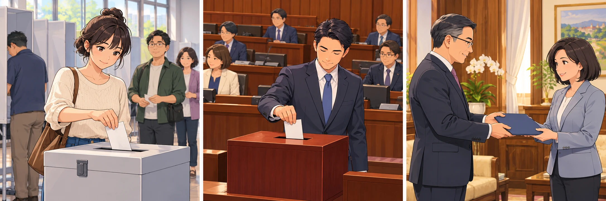
① 總統、副總統：由人民直選
本項問一般產生方式。總統、副總統由符合資格的公民直接投票選出，因此填A公民直接選舉；不是由其他官員代為任命。
② 立委互選：選的是立法院正副院長
B的立法委員互選，指立法院院長、副院長的產生方式。重點不是看到選舉兩字就配對，而是看由誰選、選出哪個職位。
③ 任命是另一種人事程序
C、D、E分別涉及直接任命、提請任命或提名後經同意任命。它們都不是本項總統、副總統的一般產生方式。
④ 先問由誰選：人民直選與立委互選不同
答案 A：公民直接選舉
- 先認職稱：本項是總統、副總統，不是立法院院長、副院長。
- 再認選任者：公民直選、立委互選與官員任命要分清。
- 按題目的一般產生方式作答，不把其他官員程序套到國家元首。
核對註記：已核對題幹、全部選項與必要材料；教材對應課次未確認，歸綜合。
原圖（僅本題）

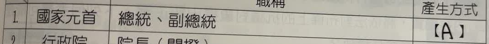
公民第2項｜行政院院長的產生方式
分享原卷｜官員產生方式第2項 · 首次出題日期 2026-10-24 · 原AI對話 ↗
逐項解析
| 選項與原句 | 判讀 | 句意與判斷理由 |
|---|---|---|
| (A) 公民直接選舉 | 不選 | 此為總統、副總統等民選職務的基本產生方式，不是行政院院長。 |
| (B) 立法委員互選 | 不選 | 此為立法院院長、副院長由立法委員互選的方式。 |
| (C) 總統直接任命 | 應選 | 依憲法增修條文第3條，行政院院長由總統任命，不須先經立法院同意。 |
| (D) 院長提請總統任命 | 不選 | 行政院副院長及各部會首長等，才是由行政院院長提請總統任命。 |
| (E) 由總統提名，經立法院同意後由總統任命 | 不選 | 不可把司法院、考試院、監察院等依法須立法院同意的人事任命程序，套在行政院院長身上。 |
詳細說明與解題步驟
一、先圈職稱，避免只背五院名稱
題目指定的是行政院「院長」，也就是閣揆，不是行政院副院長，也不是其他院的院長。
二、依現行增修條文判斷
憲法增修條文第3條規定行政院院長由總統任命，原憲法第55條的同意任命程序已停止適用。因此本題填C，不是E。
三、對照容易混淆的職務
行政院副院長及各部會首長等，由行政院院長提請總統任命，對應D；立法院院長、副院長由立委互選，對應B。判斷時要看完整職稱，不能只看到「院長」就一律選同一種程序。
快速判斷：行政院院長＝總統任命；行政院其他主要閣員＝院長提請總統任命。
核對依據：總統府公布的憲法增修條文第3條。
https://www.president.gov.tw/Page/95

① 行政院院長：總統任命
題目問行政院院長，也就是閣揆。憲法增修條文第3條規定由總統任命，不須先取得立法院同意，對應C。
② 其他主要閣員：院長提請
行政院副院長、各部會首長等，由行政院院長提請總統任命。這種程序對應D，不能套在行政院院長自己身上。
③ 立法院院長：立委互選
立法院院長、副院長由立法委員互選，對應B。即使都有「院長」兩字，機關不同，產生方式也不同。
④ 先看職稱，再判斷產生方式
答案 C：總統直接任命
- 行政院院長，不是行政院副院長，也不是立法院院長。
- 原憲法第55條的同意程序已停止適用。
- 圖中人物與場景為程序示意，不代表現任官員或特定典禮。
核對註記：使用者已確認本題答案C及AI圖處理：保留正確文字解說；來源AI圖的任命口訣漏列司法院，因此不展示該圖。
原圖（僅本題）
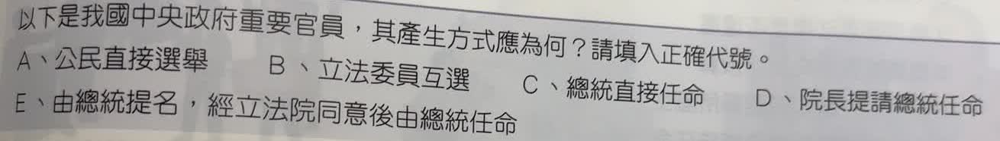
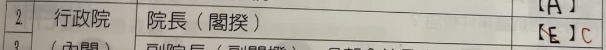
公民第3項｜副閣揆與閣員的產生方式
分享原卷｜第 3項 題 · 首次出題日期 2026-10-24 · 原AI對話 ↗
逐項解析
| 選項與原句 | 判讀 | 句意與判斷理由 |
|---|---|---|
| (A) 公民直接選舉 | 不選 | 內閣成員不是由公民直接選出。 |
| (B) 立法委員互選 | 不選 | 立法委員不互選行政院副院長或各部會首長。 |
| (C) 總統直接任命 | 不選 | 本項需要行政院院長先提請，不能省略此程序而選總統直接任命。 |
| (D) 院長提請總統任命 | 應選 | 由行政院院長提請總統任命，符合內閣成員的產生程序。 |
| (E) 由總統提名，經立法院同意後由總統任命 | 不選 | 本項的副院長及閣員不是依總統提名、立法院同意的程序產生。 |
詳細說明與解題步驟
行政院院長具有組閣權，行政院副院長及各部會首長，由行政院院長提請總統任命，應填D。D中的「院長」指行政院院長。這與行政院院長本人由總統任命不同，也與司法院、考試院、監察院重要官員須經立法院同意的人事程序不同。
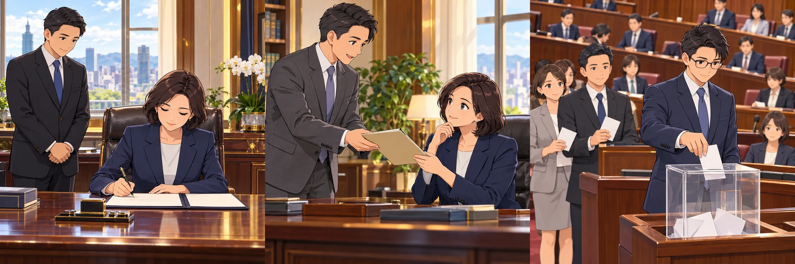
① 院長本人，與其他閣員不同
行政院院長本人由總統任命，對應C。但這題問副院長與各部會首長，不能把院長本人的產生方式直接套過來。
② 本題：先由行政院院長提請
行政院副院長、各部會首長，由行政院院長提請總統任命。D的院長指行政院院長；必須保留先提請、再任命的程序。
③ 立委互選，是另一個機關的事
立法院院長、副院長由立法委員互選，才對應B。名稱都有院長，卻不代表機關、職位與產生方式都相同。
④ 副閣揆與閣員，不能漏掉院長提請
答案 D：院長提請總統任命
- 先圈出本項職稱：副閣揆、各部會首長，而非閣揆本人。
- 副閣揆是行政院副院長，D中的院長是行政院院長。
- 本項不套用E的總統提名、立法院同意程序。
核對註記：已核對題幹、全部選項與必要材料；教材對應課次未確認，歸綜合。
原圖（僅本題）

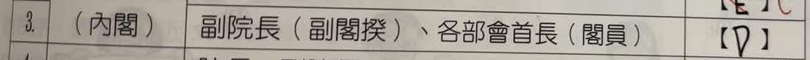
公民第4項｜立法院院長、副院長的產生方式
分享原卷｜第 4項 題 · 首次出題日期 2026-10-24 · 原AI對話 ↗
逐項解析
| 選項與原句 | 判讀 | 句意與判斷理由 |
|---|---|---|
| (A) 公民直接選舉 | 不選 | 人民直接選出立法委員，再由立法委員互選院長、副院長。 |
| (B) 立法委員互選 | 應選 | 立法院院長、副院長由立法委員互選產生。 |
| (C) 總統直接任命 | 不選 | 總統不任命立法院院長、副院長。 |
| (D) 院長提請總統任命 | 不選 | 立法院的正、副院長不由行政院院長提請任命。 |
| (E) 由總統提名，經立法院同意後由總統任命 | 不選 | 本項採立法委員互選，不採總統提名再由立法院同意。 |
詳細說明與解題步驟
立法委員先經人民選舉取得席次，再於院內互選立法院院長、副院長，所以應填B。不要因為職稱也叫「院長」，就套用行政院院長或其他院長的任命方式。

① 先分清立委與立法院院長
人民選出立法委員，不等於人民另外直接選出立法院院長、副院長。兩種職稱不同，要分兩個步驟理解。
② 院內由立法委員互選
立法委員取得席次後，在院內互選院長、副院長，對應B。這裡投票的是立法委員，選出的是立法院正、副院長。
③ 不要套成總統任命
C、D、E都是任命相關程序，並非本項方式。即使行政院與立法院都有院長、副院長，產生方式仍不同，不能只看職稱後半段。
④ 人民選立委，立委再互選正副院長
答案 B：立法委員互選
- 先看本項所屬機關是立法院，不是行政院。
- 區分兩層：人民選立委，立委互選院長、副院長。
- 總統不依C、D或E的任命程序產生本項正副院長。
核對註記：已核對題幹、全部選項與必要材料；教材對應課次未確認，歸綜合。
原圖（僅本題）
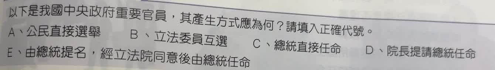
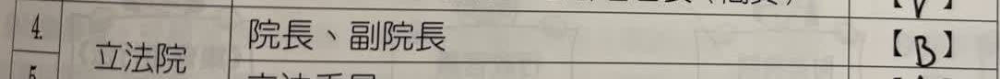
公民第5項｜立法委員的產生方式
分享原卷｜第 5項 題 · 首次出題日期 2026-10-24 · 原AI對話 ↗
逐項解析
| 選項與原句 | 判讀 | 句意與判斷理由 |
|---|---|---|
| (A) 公民直接選舉 | 應選 | 立法委員由公民透過選舉產生；本表應填A。 |
| (B) 立法委員互選 | 不選 | 互選產生的是立法院院長、副院長，不是全體立法委員。 |
| (C) 總統直接任命 | 不選 | 立法委員不由總統直接任命。 |
| (D) 院長提請總統任命 | 不選 | 立法委員不由行政院院長提請總統任命。 |
| (E) 由總統提名，經立法院同意後由總統任命 | 不選 | 立法委員不經總統提名、立法院同意任命。 |
詳細說明與解題步驟
立法委員是民意代表，透過人民選舉產生，應填A。選舉包含區域、原住民及全國不分區等類別；不分區席次依政黨票分配，仍以選民投票為基礎，不是由總統任命。務必區別「選出立法委員」與「立法委員互選正、副院長」。
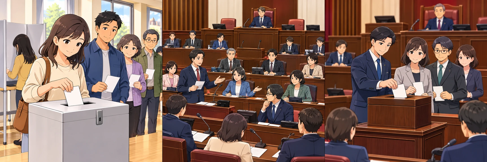
① 先看題目問哪個職稱
本項問的是「立法委員」。立委是民意代表，由公民透過選舉產生，對應選項A。
② 選出後，代表民意
選民投票是立法委員產生的基礎。不分區席次依政黨票分配，也不是由總統直接任命。
③ 「互選」是另一個問題
如果問「立法院院長、副院長」如何產生，才是由立法委員互選。不能把院長的產生方式填到立委這一欄。
④ 人民選立委，立委再互選院長
答案 A：公民直接選舉
- 選立法委員：公民投票。
- 選立法院正、副院長：立法委員互選。
- 先認清職稱，再選產生方式。
核對註記：已核對題幹、全部選項與必要材料；教材對應課次未確認，歸綜合。
原圖（僅本題）

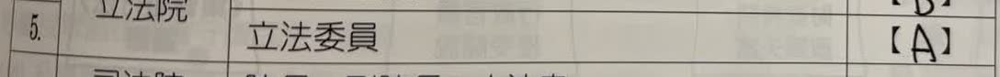
公民第6項｜司法、考試、監察三院重要官員的產生方式
分享原卷｜第 6項 題 · 首次出題日期 2026-10-24 · 原AI對話 ↗
逐項解析
| 選項與原句 | 判讀 | 句意與判斷理由 |
|---|---|---|
| (A) 公民直接選舉 | 不選 | 本項所列官員不是由公民直接投票選出。 |
| (B) 立法委員互選 | 不選 | 立法委員互選適用於立法院正、副院長，不是本項三院重要官員。 |
| (C) 總統直接任命 | 不選 | 只寫總統直接任命，漏掉提名及立法院同意的必要程序。 |
| (D) 院長提請總統任命 | 不選 | 不是由行政院院長提請任命的內閣人事。 |
| (E) 由總統提名，經立法院同意後由總統任命 | 應選 | 先由總統提名，經立法院行使同意權後，再由總統任命。 |
詳細說明與解題步驟
原卷第6項將司法、考試、監察三院所列職稱合用一個作答欄，均填E。程序是「總統提名 → 立法院同意 → 總統任命」，以人事同意權達到權力制衡。審計長也須總統提名、立法院同意，不因隸屬監察院而由監察院長自行任命。這裡只指題表所列的重要職稱，不能推論三院所有公務人員都採相同程序。
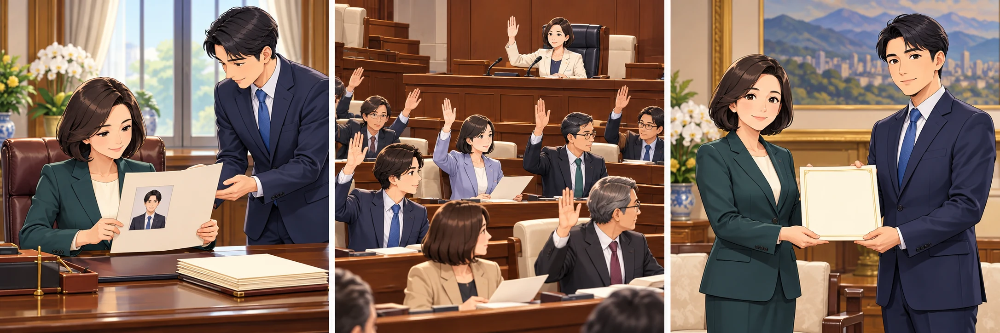
① 總統先提名
題表列出司法、考試、監察三院的重要職稱。這些職位的產生，先由總統提出人選；不是公民直接選舉。
② 立法院行使同意權
總統提名之後，須經立法院同意。這道程序具有權力制衡的作用，不能只記成「總統直接任命」。
③ 總統再任命
經立法院同意後，再由總統任命。題表中的審計長也採此程序，不是由監察院長自行任命。
④ 三院重要官員：提名、同意、任命
答案 E：總統提名，立法院同意，總統任命
- 程序順序：提名 → 同意 → 任命。
- 審計長也適用題表這一程序。
- 只指題表所列職稱，不代表三院所有公務人員。
核對註記：已核對題幹、全部選項與必要材料；教材對應課次未確認，歸綜合。
原圖（僅本題）

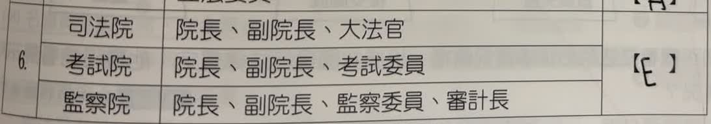